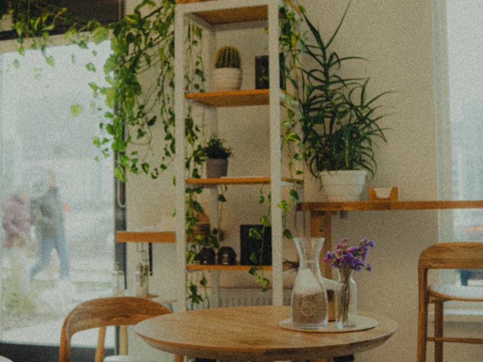
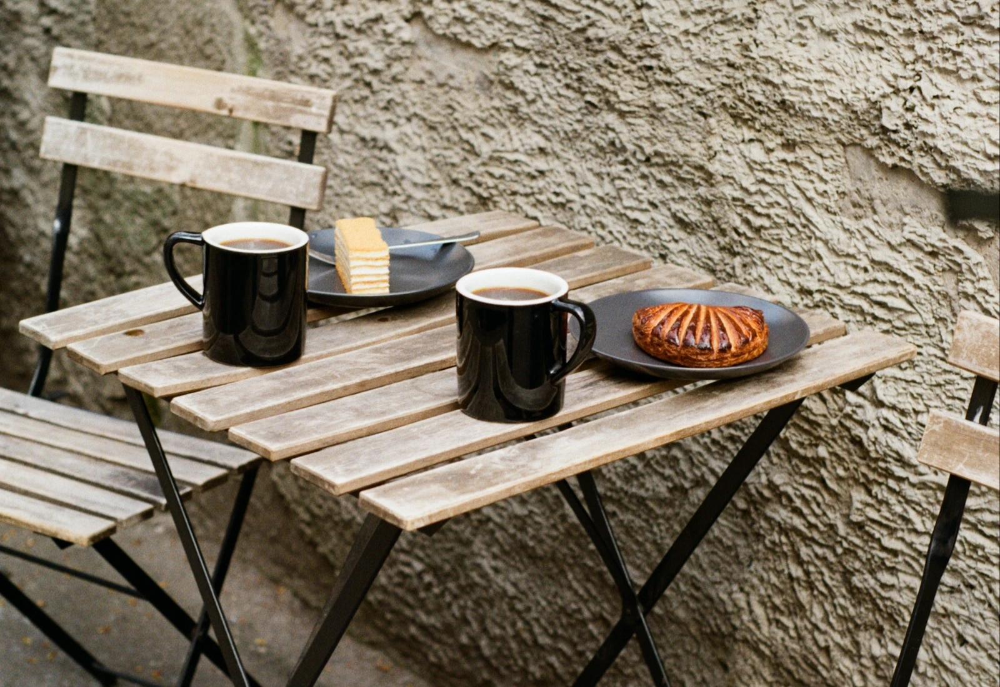
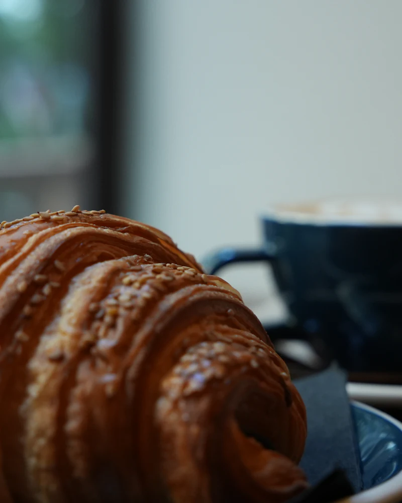
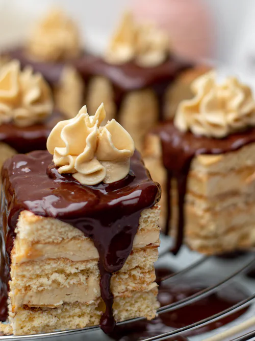
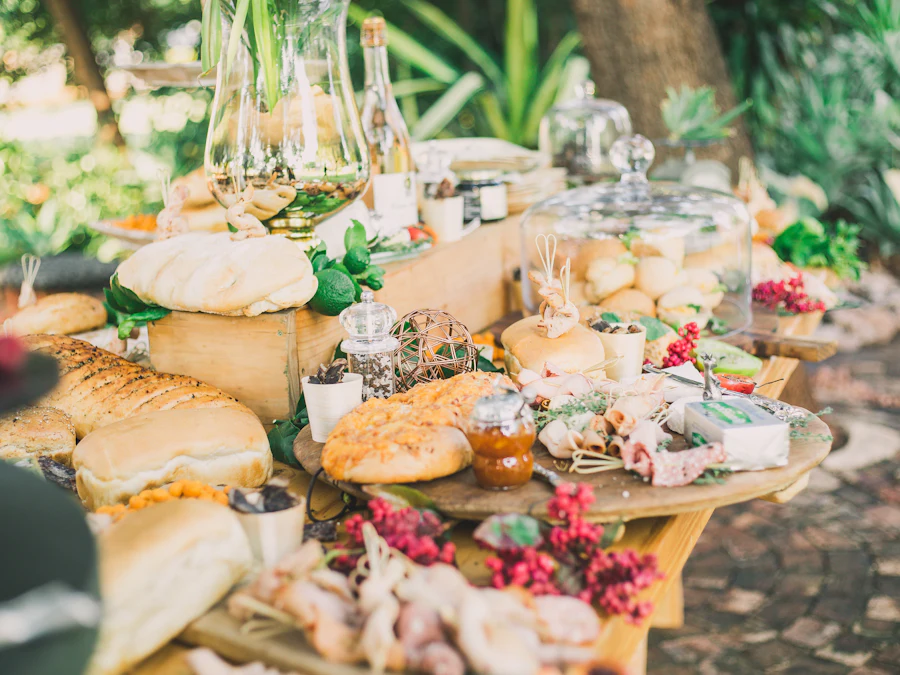
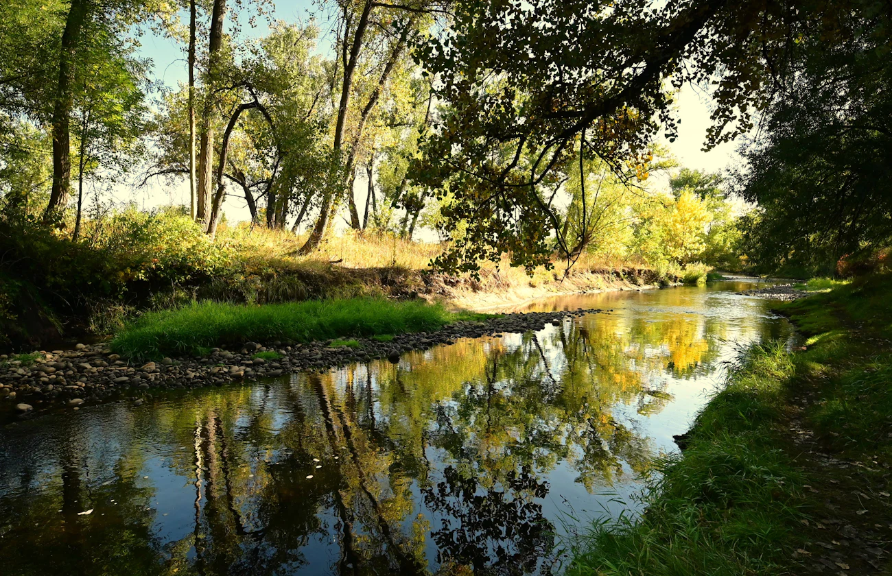
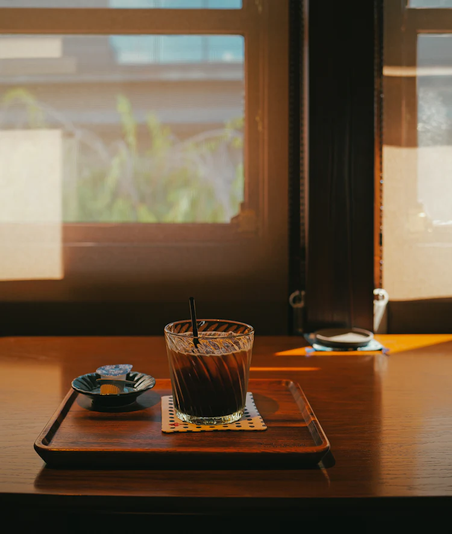

窓辺の席から、川を眺める。A SMALL ROOM BY THE RIVER
急がない日の、
いつもの寄り道。
朝の光が入るころ、豆を少しずつ焙煎します。オーブンから出たばかりの焼菓子と、湯気の立つ一杯。川面を眺めながら、本の続きを開くような時間をどうぞ。
ひとりで静かに過ごしたい日も、おやつを持ち帰りたい日も。川辺町の小さな喫茶室でお待ちしています。
slow mornings, good coffee.
川のそばで、ひと息。

窓辺の席から、川を眺める。A SMALL ROOM BY THE RIVER
朝の光が入るころ、豆を少しずつ焙煎します。オーブンから出たばかりの焼菓子と、湯気の立つ一杯。川面を眺めながら、本の続きを開くような時間をどうぞ。
ひとりで静かに過ごしたい日も、おやつを持ち帰りたい日も。川辺町の小さな喫茶室でお待ちしています。
slow mornings, good coffee.



窓の向こうに、
水の音。
ラストオーダー 17:30
火曜日・第2水曜日 お休み

14 seats · take away